Examples from Optimal Experimental Design¶
Optimal experimental design is a theory
at the interface of statistics and optimization,
which studies how to allocate some statistical trials
within a set of available design points.
The goal is to allow for the best possible
estimation of an unknown parameter  .
In what follows, we assume the standard linear model with
multiresponse experiments: a trial in the
.
In what follows, we assume the standard linear model with
multiresponse experiments: a trial in the  design point gives a multidimensional observation that
can be written as
design point gives a multidimensional observation that
can be written as  ,
where
,
where  is of dimension 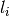,
is of dimension 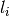,
 is a 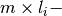 matrix,
and the error vectors
is a 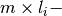 matrix,
and the error vectors  are i.i.d. with a unit variance.
are i.i.d. with a unit variance.
Several optimization criteria exist, leading to different SDP, SOCP and LP formulations. As such, optimal experimental design problens are natural examples for problems in conic optimization. For a review of the different formulations and more references, see [1].
The code below initializes the data used in all the examples of this page. It should be run prior to any of the codes presented in this page.
import cvxopt as cvx
import picos as pic
#---------------------------------#
# First generate some data : #
# _ a list of 8 matrices A #
# _ a vector c #
#---------------------------------#
A=[ cvx.matrix([[1,0,0,0,0],
[0,3,0,0,0],
[0,0,1,0,0]]),
cvx.matrix([[0,0,2,0,0],
[0,1,0,0,0],
[0,0,0,1,0]]),
cvx.matrix([[0,0,0,2,0],
[4,0,0,0,0],
[0,0,1,0,0]]),
cvx.matrix([[1,0,0,0,0],
[0,0,2,0,0],
[0,0,0,0,4]]),
cvx.matrix([[1,0,2,0,0],
[0,3,0,1,2],
[0,0,1,2,0]]),
cvx.matrix([[0,1,1,1,0],
[0,3,0,1,0],
[0,0,2,2,0]]),
cvx.matrix([[1,2,0,0,0],
[0,3,3,0,5],
[1,0,0,2,0]]),
cvx.matrix([[1,0,3,0,1],
[0,3,2,0,0],
[1,0,0,2,0]])
]
c = cvx.matrix([1,2,3,4,5])
c-optimality, multi-response: SOCP¶
We compute the c-optimal design (c=[1,2,3,4,5]) for the observation matrices A[i].T from the variable A defined above. The results below suggest that we should allocate 12.8% of the experimental effort on design point #5, and 87.2% on the design point #7.
Primal Problem¶
The SOCP for multiresponse c-optimal design is:
![\begin{center}
\begin{eqnarray*}
&\underset{\substack{\mu \in \mathbb{R}^s\\
\forall i \in [s],\ z_i \in \mathbb{R}^{l_i}}}{\mbox{minimize}}
& \sum_{i=1}^s \mu_i\\
&\mbox{subject to} & \sum_{i=1}^s A_i z_i = c\\
& & \forall i \in [s],\ \Vert z_i \Vert_2 \leq \mu_i,
\end{eqnarray*}
\end{center}](_images/math/3c68042f7674ccf1f4325cc80ddf01b1d46d4f3f.png)
#create the problem, variables and params
prob_primal_c=pic.Problem()
AA=[cvx.sparse(a,tc='d') for a in A] #each AA[i].T is a 3 x 5 observation matrix
s=len(AA)
AA=pic.new_param('A',AA)
cc=pic.new_param('c',c)
z=[prob_primal_c.add_variable('z['+str(i)+']',AA[i].size[1]) for i in range(s)]
mu=prob_primal_c.add_variable('mu',s)
#define the constraints and objective function
prob_primal_c.add_list_of_constraints(
[abs(z[i])<mu[i] for i in range(s)], #constraints
'i', #index
'[s]' #set to which the index belongs
)
prob_primal_c.add_constraint(
pic.sum(
[AA[i]*z[i] for i in range(s)], #summands
'i', #index
'[s]' #set to which the index belongs
)
== cc )
prob_primal_c.set_objective('min',1|mu)
#solve the problem and retrieve the optimal weights of the optimal design.
print prob_primal_c
prob_primal_c.solve(verbose=0,solver='cvxopt')
mu=mu.value
w=mu/sum(mu) #normalize mu to get the optimal weights
print
print 'The optimal design is:'
print w
Generated output:
---------------------
optimization problem (SOCP):
32 variables, 5 affine constraints, 32 vars in 8 SO cones
z : list of 8 variables, (3, 1), continuous
mu : (8, 1), continuous
minimize 〈 |1| | mu 〉
such that
||z[i]|| < mu[i] for all i in [s]
Σ_{i in [s]} A[i]*z[i] = c
---------------------
The optimal design is:
[...]
[...]
[...]
[...]
[ 1.28e-01]
[...]
[ 8.72e-01]
[...]
The [...] above indicate a numerical zero entry (i.e., which can be something like 2.84e-10). We use the ellipsis ... instead for clarity and compatibility with doctest.
Dual Problem¶
This is only to check that we obtain the same solution with the dual problem, and to provide one additional example in this doc:
![\begin{center}
\begin{eqnarray*}
&\underset{u \in \mathbb{R}^m}{\mbox{maximize}}
& c^T u\\
&\mbox{subject to} & \forall i \in [s],\ \Vert A_i^T u \Vert_2 \leq 1
\end{eqnarray*}
\end{center}](_images/math/9dc6325052d3769629d243b172d324cff48db715.png)
#create the problem, variables and params
prob_dual_c=pic.Problem()
AA=[cvx.sparse(a,tc='d') for a in A] #each AA[i].T is a 3 x 5 observation matrix
s=len(AA)
AA=pic.new_param('A',AA)
cc=pic.new_param('c',c)
u=prob_dual_c.add_variable('u',c.size)
#define the constraints and objective function
prob_dual_c.add_list_of_constraints(
[abs(AA[i].T*u)<1 for i in range(s)], #constraints
'i', #index
'[s]' #set to which the index belongs
)
prob_dual_c.set_objective('max', cc|u)
#solve the problem and retrieve the weights of the optimal design
print prob_dual_c
prob_dual_c.solve(verbose=0)
mu = [cons.dual[0] for cons in prob_dual_c.get_constraint((0,))] #Lagrangian duals of the SOC constraints
mu = cvx.matrix(mu)
w=mu/sum(mu) #normalize mu to get the optimal weights
print
print 'The optimal design is:'
print w
Generated output:
---------------------
optimization problem (SOCP):
5 variables, 0 affine constraints, 32 vars in 8 SO cones
u : (5, 1), continuous
maximize 〈 c | u 〉
such that
||A[i].T*u|| < 1 for all i in [s]
---------------------
The optimal design is:
[...]
[...]
[...]
[...]
[ 1.28e-01]
[...]
[ 8.72e-01]
[...]
c-optimality, single-response: LP¶
When the observation matrices are row vectors (single-response framework), the SOCP above reduces to a simple LP, because the variables 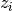 are scalar. We solve below the LP for the case where there are 11 available design points, corresponding to the columns of the matrices A[4], A[5], A[6], and A[7][:,:-1] defined in the preambule.
The optimal design allocates 3.37% to point #5 (2nd column of A[5]), 27.9% to point #7 (1st column of A[6]), 11.8% to point #8 (2nd column of A[6]), 27.6% to point #9 (3rd column of A[6]), and 29.3% to point #11 (2nd column of A[7]).
#create the problem, variables and params
prob_LP=pic.Problem()
AA=[cvx.sparse(a[:,i],tc='d') for i in range(3) for a in A[4:]] #12 column vectors
AA=AA[:-1] #remove the last design point (it is the same as the last-but-one)
s=len(AA)
AA=pic.new_param('A',AA)
cc=pic.new_param('c',c)
z=[prob_LP.add_variable('z['+str(i)+']',1) for i in range(s)]
mu=prob_LP.add_variable('mu',s)
#define the constraints and objective function
prob_LP.add_list_of_constraints(
[abs(z[i])<mu[i] for i in range(s)], #constraints handled as -mu_i < z_i< mu_i
'i', #index
'[s]' #set to which the index belongs
)
prob_LP.add_constraint(
pic.sum(
[AA[i]*z[i] for i in range(s)], #summands
'i', #index
'[s]' #set to which the index belongs
)
== cc )
prob_LP.set_objective('min',1|mu)
#solve the problem and retrieve the weights of the optimal design
print prob_LP
prob_LP.solve(verbose=0)
mu=mu.value
w=mu/sum(mu) #normalize mu to get the optimal weights
print
print 'The optimal design is:'
print w
Note that there are no cone constraints, because
the constraints of the form  are handled as two
inequalities when is scalar, so the problem is a LP indeed:
are handled as two
inequalities when is scalar, so the problem is a LP indeed:
---------------------
optimization problem (LP):
22 variables, 27 affine constraints
z : list of 11 variables, (1, 1), continuous
mu : (11, 1), continuous
minimize 〈 |1| | mu 〉
such that
||z[i]|| < mu[i] for all i in [s]
Σ_{i in [s]} A[i]*z[i] = c
---------------------
The optimal design is:
[...]
[...]
[...]
[...]
[ 3.37e-02]
[...]
[ 2.79e-01]
[ 1.18e-01]
[ 2.76e-01]
[...]
[ 2.93e-01]
SDP formulation of the c-optimal design problem¶
We give below the SDP for c-optimality, in primal and dual form. You can observe that we obtain the same results as with the SOCP presented earlier: 12.8% on design point #5, and 87.2% on design point #7.
Primal Problem¶
The SDP formulation of the c-optimal design problem is:

#create the problem, variables and params
prob_SDP_c_primal=pic.Problem()
AA=[cvx.sparse(a,tc='d') for a in A] #each AA[i].T is a 3 x 5 observation matrix
s=len(AA)
AA=pic.new_param('A',AA)
cc=pic.new_param('c',c)
mu=prob_SDP_c_primal.add_variable('mu',s)
#define the constraints and objective function
prob_SDP_c_primal.add_constraint(
pic.sum(
[mu[i]*AA[i]*AA[i].T for i in range(s)], #summands
'i', #index
'[s]' #set to which the index belongs
)
>> cc*cc.T )
prob_SDP_c_primal.add_constraint(mu>0)
prob_SDP_c_primal.set_objective('min',1|mu)
#solve the problem and retrieve the weights of the optimal design
print prob_SDP_c_primal
prob_SDP_c_primal.solve(verbose=0)
w=mu.value
w=w/sum(w) #normalize mu to get the optimal weights
print
print 'The optimal design is:'
print w
---------------------
optimization problem (SDP):
8 variables, 8 affine constraints, 15 vars in 1 SD cones
mu : (8, 1), continuous
minimize 〈 |1| | mu 〉
such that
Σ_{i in [s]} mu[i]*A[i]*A[i].T ≽ c*c.T
mu > |0|
---------------------
The optimal design is:
[...]
[...]
[...]
[...]
[ 1.28e-01]
[...]
[ 8.72e-01]
[...]
Dual Problem¶
This is only to check that we obtain the same solution with the dual problem, and to provide one additional example in this doc:
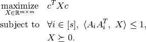
#create the problem, variables and params
prob_SDP_c_dual=pic.Problem()
AA=[cvx.sparse(a,tc='d') for a in A] #each AA[i].T is a 3 x 5 observation matrix
s=len(AA)
AA=pic.new_param('A',AA)
cc=pic.new_param('c',c)
m =c.size[0]
X=prob_SDP_c_dual.add_variable('X',(m,m),vtype='symmetric')
#define the constraints and objective function
prob_SDP_c_dual.add_list_of_constraints(
[(AA[i]*AA[i].T | X ) <1 for i in range(s)], #constraints
'i', #index
'[s]' #set to which the index belongs
)
prob_SDP_c_dual.add_constraint(X>>0)
prob_SDP_c_dual.set_objective('max', cc.T*X*cc)
#solve the problem and retrieve the weights of the optimal design
print prob_SDP_c_dual
prob_SDP_c_dual.solve(verbose=0,solver='cvxopt')
mu = [cons.dual[0] for cons in prob_SDP_c_dual.get_constraint((0,))] #Lagrangian duals of the SOC constraints
mu = cvx.matrix(mu)
w=mu/sum(mu) #normalize mu to get the optimal weights
print
print 'The optimal design is:'
print w
print 'and the optimal positive semidefinite matrix X is'
print X
---------------------
optimization problem (SDP):
15 variables, 8 affine constraints, 15 vars in 1 SD cones
X : (5, 5), symmetric
maximize c.T*X*c
such that
〈 A[i]*A[i].T | X 〉 < 1.0 for all i in [s]
X ≽ |0|
---------------------
The optimal design is:
[...]
[...]
[...]
[...]
[ 1.28e-01]
[...]
[ 8.72e-01]
[...]
and the optimal positive semidefinite matrix X is
[ 5.92e-03 8.98e-03 2.82e-03 -3.48e-02 -1.43e-02]
[ 8.98e-03 1.36e-02 4.27e-03 -5.28e-02 -2.17e-02]
[ 2.82e-03 4.27e-03 1.34e-03 -1.66e-02 -6.79e-03]
[-3.48e-02 -5.28e-02 -1.66e-02 2.05e-01 8.39e-02]
[-1.43e-02 -2.17e-02 -6.79e-03 8.39e-02 3.44e-02]
A-optimality: SOCP¶
We compute the A-optimal design for the observation matrices A[i].T defined in the preambule. The optimal design allocates 24.9% on design point #3, 14.2% on point #4, 8.51% on point #5, 12.1% on point #6, 13.2% on point #7, and 27.0% on point #8.
Primal Problem¶
The SOCP for the A-optimal design problem is:
![\begin{center}
\begin{eqnarray*}
&\underset{\substack{\mu \in \mathbb{R}^s\\
\forall i \in [s],\ Z_i \in \mathbb{R}^{l_i \times m}}}{\mbox{minimize}}
& \sum_{i=1}^s \mu_i\\
&\mbox{subject to} & \sum_{i=1}^s A_i Z_i = I\\
& & \forall i \in [s],\ \Vert Z_i \Vert_F \leq \mu_i,
\end{eqnarray*}
\end{center}](_images/math/d79f7b166b40d8ee6cbff20e543afeada0e962af.png)
#create the problem, variables and params
prob_primal_A=pic.Problem()
AA=[cvx.sparse(a,tc='d') for a in A] #each AA[i].T is a 3 x 5 observation matrix
s=len(AA)
AA=pic.new_param('A',AA)
Z=[prob_primal_A.add_variable('Z['+str(i)+']',AA[i].T.size) for i in range(s)]
mu=prob_primal_A.add_variable('mu',s)
#define the constraints and objective function
prob_primal_A.add_list_of_constraints(
[abs(Z[i])<mu[i] for i in range(s)], #constraints
'i', #index
'[s]' #set to which the index belongs
)
prob_primal_A.add_constraint(
pic.sum(
[AA[i]*Z[i] for i in range(s)], #summands
'i', #index
'[s]' #set to which the index belongs
)
== 'I' )
prob_primal_A.set_objective('min',1|mu)
#solve the problem and retrieve the weights of the optimal design
print prob_primal_A
prob_primal_A.solve(verbose=0)
w=mu.value
w=w/sum(w) #normalize mu to get the optimal weights
print
print 'The optimal design is:'
print w
---------------------
optimization problem (SOCP):
128 variables, 25 affine constraints, 128 vars in 8 SO cones
Z : list of 8 variables, (3, 5), continuous
mu : (8, 1), continuous
minimize 〈 |1| | mu 〉
such that
||Z[i]|| < mu[i] for all i in [s]
Σ_{i in [s]} A[i]*Z[i] = I
---------------------
The optimal design is:
[...]
[...]
[ 2.49e-01]
[ 1.42e-01]
[ 8.51e-02]
[ 1.21e-01]
[ 1.32e-01]
[ 2.70e-01]
Dual Problem¶
This is only to check that we obtain the same solution with the dual problem, and to provide one additional example in this doc:
![\begin{center}
\begin{eqnarray*}
&\underset{U \in \mathbb{R}^{m \times m}}{\mbox{maximize}}
& \mbox{trace}\ U\\
&\mbox{subject to} & \forall i \in [s],\ \Vert A_i^T U \Vert_2 \leq 1
\end{eqnarray*}
\end{center}](_images/math/111aacbe2b7f456d6b13c33b493c9cd7d208c425.png)
#create the problem, variables and params
prob_dual_A=pic.Problem()
AA=[cvx.sparse(a,tc='d') for a in A] #each AA[i].T is a 3 x 5 observation matrix
s=len(AA)
m=AA[0].size[0]
AA=pic.new_param('A',AA)
U=prob_dual_A.add_variable('U',(m,m))
#define the constraints and objective function
prob_dual_A.add_list_of_constraints(
[abs(AA[i].T*U)<1 for i in range(s)], #constraints
'i', #index
'[s]' #set to which the index belongs
)
prob_dual_A.set_objective('max', 'I'|U)
#solve the problem and retrieve the weights of the optimal design
print prob_dual_A
prob_dual_A.solve(verbose = 0)
mu = [cons.dual[0] for cons in prob_dual_A.get_constraint((0,))] #Lagrangian duals of the SOC constraints
mu = cvx.matrix(mu)
w=mu/sum(mu) #normalize mu to get the optimal weights
print
print 'The optimal design is:'
print w
---------------------
optimization problem (SOCP):
25 variables, 0 affine constraints, 128 vars in 8 SO cones
U : (5, 5), continuous
maximize trace( U )
such that
||A[i].T*U|| < 1 for all i in [s]
---------------------
The optimal design is:
[...]
[...]
[ 2.49e-01]
[ 1.42e-01]
[ 8.51e-02]
[ 1.21e-01]
[ 1.32e-01]
[ 2.70e-01]
A-optimality with multiple constraints: SOCP¶
A-optimal designs can also be computed by SOCP
when the vector of weights  is subject
to several linear constraints.
To give an example, we compute the A-optimal design for
the observation matrices given in the preambule, when the weights
must satisfy:
is subject
to several linear constraints.
To give an example, we compute the A-optimal design for
the observation matrices given in the preambule, when the weights
must satisfy:  and
and  .
This problem has the following SOCP formulation:
.
This problem has the following SOCP formulation:
![\begin{center}
\begin{eqnarray*}
&\underset{\substack{\mathbf{w} \in \mathbb{R}^s\\
\mu \in \mathbb{R}^s\\
\forall i \in [s],\ Z_i \in \mathbb{R}^{l_i \times m}}}{\mbox{minimize}}
& \sum_{i=1}^s \mu_i\\
&\mbox{subject to} & \sum_{i=1}^s A_i Z_i = I\\
& & \sum_{i=0}^3 w_i \leq 0.5\\
& & \sum_{i=4}^7 w_i \leq 0.5\\
& & \forall i \in [s],\ \Vert Z_i \Vert_F^2 \leq \mu_i w_i,
\end{eqnarray*}
\end{center}](_images/math/fdc82bd5573eeb5a7eb3e936804d29e228612380.png)
The optimal solution allocates 29.7% and 20.3% to the design points #3 and #4, and respectively 6.54%, 11.9%, 9.02% and 22.5% to the design points #5 to #8:
#create the problem, variables and params
prob_A_multiconstraints=pic.Problem()
AA=[cvx.sparse(a,tc='d') for a in A] #each AA[i].T is a 3 x 5 observation matrix
s=len(AA)
AA=pic.new_param('A',AA)
mu=prob_A_multiconstraints.add_variable('mu',s)
w =prob_A_multiconstraints.add_variable('w',s)
Z=[prob_A_multiconstraints.add_variable('Z['+str(i)+']',AA[i].T.size) for i in range(s)]
#define the constraints and objective function
prob_A_multiconstraints.add_constraint(
pic.sum(
[AA[i]*Z[i] for i in range(s)], #summands
'i', #index
'[s]' #set to which the index belongs
)
== 'I' )
prob_A_multiconstraints.add_constraint( (1|w[:4]) < 0.5)
prob_A_multiconstraints.add_constraint( (1|w[4:]) < 0.5)
prob_A_multiconstraints.add_list_of_constraints(
[abs(Z[i])**2<mu[i]*w[i]
for i in range(s)],'i','[s]')
prob_A_multiconstraints.set_objective('min',1|mu)
#solve the problem and retrieve the weights of the optimal design
print prob_A_multiconstraints
prob_A_multiconstraints.solve(verbose=0)
w=w.value
w=w/sum(w) #normalize w to get the optimal weights
print
print 'The optimal design is:'
print w
---------------------
optimization problem (SOCP):
136 variables, 27 affine constraints, 136 vars in 8 SO cones
Z : list of 8 variables, (3, 5), continuous
mu : (8, 1), continuous
w : (8, 1), continuous
minimize 〈 |1| | mu 〉
such that
Σ_{i in [s]} A[i]*Z[i] = I
〈 |1| | w[:4] 〉 < 0.5
〈 |1| | w[4:] 〉 < 0.5
||Z[i]||^2 < ( mu[i])( w[i]) for all i in [s]
---------------------
The optimal design is:
[...]
[...]
[ 2.97e-01]
[ 2.03e-01]
[ 6.54e-02]
[ 1.19e-01]
[ 9.02e-02]
[ 2.25e-01]
Exact A-optimal design: MISOCP¶
In the exact version of A-optimality, a number 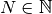
of trials is given, and the goal is to find the optimal number of times
 that a trial on design point #i should be performed,
with
that a trial on design point #i should be performed,
with  .
.
The SOCP formulation of A-optimality for constrained designs also accept integer constraints, which results in a MISOCP for exact A-optimality:
![\begin{center}
\begin{eqnarray*}
&\underset{\substack{\mathbf{t} \in \mathbb{R}^s\\
\mathbf{n} \in \mathbb{N}^s\\
\forall i \in [s],\ Z_i \in \mathbb{R}^{l_i \times m}}}{\mbox{minimize}}
& \sum_{i=1}^s t_i\\
&\mbox{subject to} & \sum_{i=1}^s A_i Z_i = I\\
& & \forall i \in [s],\ \Vert Z_i \Vert_F^2 \leq n_i t_i,\\
& & \sum_{i=1}^s n_i = N.
\end{eqnarray*}
\end{center}](_images/math/0e3d8d04c8f040f23e451c31b909c6e60b761610.png)
The exact optimal design is ![\mathbf{n}=[0,0,5,3,2,2,3,5]](_images/math/c9ef56e80463e6896aeefd472a49260cf725cb98.png) :
:
#create the problem, variables and params
prob_exact_A=pic.Problem()
AA=[cvx.sparse(a,tc='d') for a in A] #each AA[i].T is a 3 x 5 observation matrix
s=len(AA)
m=AA[0].size[0]
AA=pic.new_param('A',AA)
cc=pic.new_param('c',c)
N =pic.new_param('N',20) #number of trials allowed
I =pic.new_param('I',cvx.spmatrix([1]*m,range(m),range(m),(m,m))) #identity matrix
Z=[prob_exact_A.add_variable('Z['+str(i)+']',AA[i].T.size) for i in range(s)]
n=prob_exact_A.add_variable('n',s, vtype='integer')
t=prob_exact_A.add_variable('t',s)
#define the constraints and objective function
prob_exact_A.add_list_of_constraints(
[abs(Z[i])**2<n[i]*t[i] for i in range(s)], #constraints
'i', #index
'[s]' #set to which the index belongs
)
prob_exact_A.add_constraint(
pic.sum(
[AA[i]*Z[i] for i in range(s)], #summands
'i', #index
'[s]' #set to which the index belongs
)
== I )
prob_exact_A.add_constraint( 1|n < N )
prob_exact_A.set_objective('min',1|t)
#solve the problem and display the optimal design
print prob_exact_A
prob_exact_A.solve(solver='mosek',verbose = 0)
print n
---------------------
optimization problem (MISOCP):
136 variables, 26 affine constraints, 136 vars in 8 SO cones
Z : list of 8 variables, (3, 5), continuous
n : (8, 1), integer
t : (8, 1), continuous
minimize 〈 |1| | t 〉
such that
||Z[i]||^2 < ( n[i])( t[i]) for all i in [s]
Σ_{i in [s]} A[i]*Z[i] = I
〈 |1| | n 〉 < N
---------------------
[...]
[...]
[ 5.00e+00]
[ 3.00e+00]
[ 2.00e+00]
[ 2.00e+00]
[ 3.00e+00]
[ 5.00e+00]
approximate and exact D-optimal design: (MI)SOCP¶
The D-optimal design problem has a SOCP formulation involving a geometric mean in the objective function:
![\begin{center}
\begin{eqnarray*}
&\underset{\substack{\mathbf{L} \in \mathbb{R}^{m \times m}\\
\mathbf{w} \in \mathbb{R}^s\\
\forall i \in [s],\ V_i \in \mathbb{R}^{l_i \times m}}}{\mbox{maximize}}
& \left(\prod_{i=1}^m L_{i,i}\right)^{1/m}\\
&\mbox{subject to} & \sum_{i=1}^s A_i V_i = L,\\
& & L\ \mbox{lower triangular},\\
& & \Vert V_i \Vert_F \leq \sqrt{m}\ w_i,\\
& & \sum_{i=1}^s w_i \leq 1.
\end{eqnarray*}
\end{center}](_images/math/a68257e94debbda45b91299b05e8fdfe2be67ced.png)
By introducing a new variable  such that
such that
 , we can pass
this problem to PICOS with the function picos.geomean(),
which reformulates the geometric mean inequality as a set of equivalent second order cone
constraints.
The example below allocates respectively 22.7%, 3.38%, 1.65%, 5.44%, 31.8% and 35.1%
to the design points #3 to #8.
, we can pass
this problem to PICOS with the function picos.geomean(),
which reformulates the geometric mean inequality as a set of equivalent second order cone
constraints.
The example below allocates respectively 22.7%, 3.38%, 1.65%, 5.44%, 31.8% and 35.1%
to the design points #3 to #8.
#create the problem, variables and params
prob_D = pic.Problem()
AA=[cvx.sparse(a,tc='d') for a in A] #each AA[i].T is a 3 x 5 observation matrix
s=len(AA)
m=AA[0].size[0]
AA=pic.new_param('A',AA)
mm=pic.new_param('m',m)
L=prob_D.add_variable('L',(m,m))
V=[prob_D.add_variable('V['+str(i)+']',AA[i].T.size) for i in range(s)]
w=prob_D.add_variable('w',s)
#additional variable to handle the geometric mean in the objective function
t= prob_D.add_variable('t',1)
#define the constraints and objective function
prob_D.add_constraint(
pic.sum([AA[i]*V[i]
for i in range(s)],'i','[s]')
== L)
#L is lower triangular
prob_D.add_list_of_constraints( [L[i,j] == 0
for i in range(m)
for j in range(i+1,m)],['i','j'],'upper triangle')
prob_D.add_list_of_constraints([abs(V[i])<(mm**0.5)*w[i]
for i in range(s)],'i','[s]')
prob_D.add_constraint(1|w<1)
prob_D.add_constraint(t<pic.geomean(pic.diag_vect(L)))
prob_D.set_objective('max',t)
#solve the problem and display the optimal design
print prob_D
prob_D.solve(verbose=0)
print w
---------------------
optimization problem (SOCP):
159 variables, 36 affine constraints, 146 vars in 14 SO cones
V : list of 8 variables, (3, 5), continuous
L : (5, 5), continuous
t : (1, 1), continuous
w : (8, 1), continuous
maximize t
such that
L = Σ_{i in [s]} A[i]*V[i]
L[i,j] = 0 for all (i,j) in upper triangle
||V[i]|| < (m)**0.5*w[i] for all i in [s]
〈 |1| | w 〉 < 1.0
t<geomean( diag(L))
---------------------
[...]
[...]
[ 2.27e-01]
[ 3.38e-02]
[ 1.65e-02]
[ 5.44e-02]
[ 3.18e-01]
[ 3.51e-01]
We point out that until
the version 0.1.3 of PICOS, the SOC constraints used to
represent the geometric mean had to be added manually. For the previous example,
a possible trick consists in creating a variable
that must satisfies 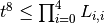:
#remove the geometric mean inequality
prob_D.remove_constraint((4,))
#additional variables to handle the product of the diagonal elements of L
u={}
for k in ['01','23','4.','0123','4...']:
u[k] = prob_D.add_variable('u['+k+']',1)
#SOC constraints to define u['01234'] such that u['01234']**8 < L[0,0] * L[1,1] * ... * L[4,4]
prob_D.add_constraint(u['01']**2 <L[0,0]*L[1,1])
prob_D.add_constraint(u['23']**2 <L[2,2]*L[3,3])
prob_D.add_constraint(u['4.']**2 <L[4,4])
prob_D.add_constraint(u['0123']**2 <u['01']*u['23'])
prob_D.add_constraint(u['4...']**2 <u['4.'])
prob_D.add_constraint(t**2<u['0123']*u['4...'])
#solve the problem and display the optimal design
print prob_D
prob_D.solve(verbose=0,solver='cvxopt')
print w
As for the A-optimal problem, there is an alternative SOCP formulation
of D-optimality [2], in which integer constraints may be added.
This allows us to formulate the exact D-optimal problem as a MISOCP.
For  ,
we obtain the following N-exact D-optimal design:
,
we obtain the following N-exact D-optimal design:
![\mathbf{n}=[0,0,5,1,0,1,6,7]](_images/math/09962f49bab64d6173b8e4304637eb66f2c02151.png) :
:
#create the problem, variables and params
prob_exact_D = pic.Problem()
L=prob_exact_D.add_variable('L',(m,m))
V=[prob_exact_D.add_variable('V['+str(i)+']',AA[i].T.size) for i in range(s)]
T=prob_exact_D.add_variable('T',(s,m))
n=prob_exact_D.add_variable('n',s,'integer')
N = pic.new_param('N',20)
#additional variable to handle the geomean inequality
t = prob_exact_D.add_variable('t',1)
#define the constraints and objective function
prob_exact_D.add_constraint(
pic.sum([AA[i]*V[i]
for i in range(s)],'i','[s]')
== L)
#L is lower triangular
prob_exact_D.add_list_of_constraints( [L[i,j] == 0
for i in range(m)
for j in range(i+1,m)],['i','j'],'upper triangle')
prob_exact_D.add_list_of_constraints([abs(V[i][:,k])**2<n[i]/N*T[i,k]
for i in range(s) for k in range(m)],['i','k'])
prob_exact_D.add_list_of_constraints([(1|T[:,k])<1
for k in range(m)],'k')
prob_exact_D.add_constraint(1|n<N)
prob_exact_D.add_constraint(t<pic.geomean( pic.diag_vect(L)))
prob_exact_D.set_objective('max',t)
#solve the problem and display the optimal design
print prob_exact_D
prob_exact_D.solve(solver='mosek',verbose=0)
print n
---------------------
optimization problem (MISOCP):
199 variables, 41 affine constraints, 218 vars in 46 SO cones
V : list of 8 variables, (3, 5), continuous
L : (5, 5), continuous
T : (8, 5), continuous
n : (8, 1), integer
t : (1, 1), continuous
maximize t
such that
L = Σ_{i in [s]} A[i]*V[i]
L[i,j] = 0 for all (i,j) in upper triangle
||V[i][:,k]||^2 < ( n[i] / N)( T[i,k]) for all (i,k)
〈 |1| | T[:,k] 〉 < 1.0 for all k
〈 |1| | n 〉 < N
t<geomean( diag(L))
---------------------
[...]
[...]
[ 5.00e+00]
[ 1.00e+00]
[...]
[ 1.00e+00]
[ 6.00e+00]
[ 7.00e+00]
Former MAXDET formulation of the D-optimal design: SDP¶
A so-called MAXDET Programming formulation of the D-optimal design has been known since the late 90’s [3], and can be reformulated as a SDP thanks to the detrootn() function. The following code finds the same design as the SOCP approach presented above.
#problem, variables and parameters
prob_D = pic.Problem()
AA=[cvx.sparse(a,tc='d') for a in A] #each AA[i].T is a 3 x 5 observation matrix
s=len(AA)
m=AA[0].size[0]
AA=pic.new_param('A',AA)
w = prob_D.add_variable('w',s,lower=0)
t = prob_D.add_variable('t',1)
#constraint and objective
prob_D.add_constraint(1|w < 1)
Mw = pic.sum([w[i]*AA[i]*AA[i].T for i in range(s)],'i')
prob_D.add_constraint(t < pic.detrootn(Mw))
prob_D.set_objective('max',t)
#solve and display
print prob_D
prob_D.solve(verbose=0)
print w
---------------------
optimization problem (ConeP):
29 variables, 1 affine constraints, 18 vars in 6 SO cones, 55 vars in 1 SD cones
t : (1, 1), continuous
w : (8, 1), continuous, nonnegative
maximize t
such that
〈 |1| | w 〉 < 1.0
det( Σ_i w[i]*A[i]*A[i].T)**1/5>t
---------------------
[ ...]
[ ...]
[ 2.27e-01]
[ 3.38e-02]
[ 1.65e-02]
[ 5.44e-02]
[ 3.18e-01]
[ 3.51e-01]
General Phi_p optimal design Problem: SDP¶
The A- and D-optimal design problems presented above can be obtained as special cases of the general
Kiefer 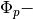 optimal design problem, where  is a real in 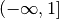 :
is a real in 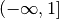 :

These problems are easy to enter in PICOS, thanks to the tracepow() function,
that automatically replaces inequalities involving trace of matrix powers as a set of equivalent linear matrix
inequalities (SDP) (cf. [4] ). Below are two examples with 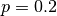 and  ,
allocating respectively (20.6%, 0.0%, 0.0%, 0.92%, 40.8%, 37.7%), and
(24.8%, 16.6%, 10.8%, 14.1%, 7.84%, 26.0%) of the trials to the design points 3 to 8.
,
allocating respectively (20.6%, 0.0%, 0.0%, 0.92%, 40.8%, 37.7%), and
(24.8%, 16.6%, 10.8%, 14.1%, 7.84%, 26.0%) of the trials to the design points 3 to 8.
#problems, variables and parameters
prob_0dot2 = pic.Problem()
probminus3 = pic.Problem()
AA=[cvx.sparse(a,tc='d') for a in A] #each AA[i].T is a 3 x 5 observation matrix
s=len(AA)
m=AA[0].size[0]
AA=pic.new_param('A',AA)
w02 = prob_0dot2.add_variable('w',s,lower=0)
wm3 = probminus3.add_variable('w',s,lower=0)
t02 = prob_0dot2.add_variable('t',1)
tm3 = probminus3.add_variable('t',1)
#constraint and objective
prob_0dot2.add_constraint(1|w02 < 1)
probminus3.add_constraint(1|wm3 < 1)
Mw02 = pic.sum([w02[i]*AA[i]*AA[i].T for i in range(s)],'i')
prob_0dot2.add_constraint(t02 < pic.tracepow(Mw02,0.2))
prob_0dot2.set_objective('max',t02)
Mwm3 = pic.sum([wm3[i]*AA[i]*AA[i].T for i in range(s)],'i')
probminus3.add_constraint(tm3 > pic.tracepow(Mwm3,-3))
probminus3.set_objective('min',tm3)
#solve and display
prob_0dot2.solve(verbose=0)
probminus3.solve(verbose=0)
print '*** p=0.2 ***'
print prob_0dot2
print w02
print '*** p= -3 ***'
print probminus3
print wm3
*** p=0.2 ***
---------------------
optimization problem (SDP):
54 variables, 2 affine constraints, 165 vars in 3 SD cones
t : (1, 1), continuous
w : (8, 1), continuous, nonnegative
maximize t
such that
〈 |1| | w 〉 < 1.0
trace( Σ_i w[i]*A[i]*A[i].T)**1/5>t
---------------------
[ ...]
[ ...]
[ 2.06e-01]
[ ...]
[ ...]
[ 9.20e-03]
[ 4.08e-01]
[ 3.77e-01]
*** p= -3 ***
---------------------
optimization problem (SDP):
39 variables, 2 affine constraints, 110 vars in 2 SD cones
t : (1, 1), continuous
w : (8, 1), continuous, nonnegative
minimize t
such that
〈 |1| | w 〉 < 1.0
trace( Σ_i w[i]*A[i]*A[i].T)**-3<t
---------------------
[ ...]
[ ...]
[ 2.48e-01]
[ 1.66e-01]
[ 1.08e-01]
[ 1.41e-01]
[ 7.83e-02]
[ 2.60e-01]
References¶
- “Computing Optimal Designs of multiresponse Experiments reduces to Second-Order Cone Programming”, G. Sagnol, Journal of Statistical Planning and Inference, 141(5), p. 1684-1708, 2011.
- “Computing exact D-optimal designs by mixed integer second order cone programming”, G. Sagnol and R. Harman, Submitted: arXiv:1307.4953.
- “Determinant maximization with linear matrix inequality constraints”, L. Vandenberghe, S. Boyd and S.P. Wu, SIAM journal on matrix analysis and applications, 19(2), 499-533, 1998.
- “On the semidefinite representations of real functions applied to symmetric matrices”, G. Sagnol, Submitted, ZIB Report 12-50, 2012.